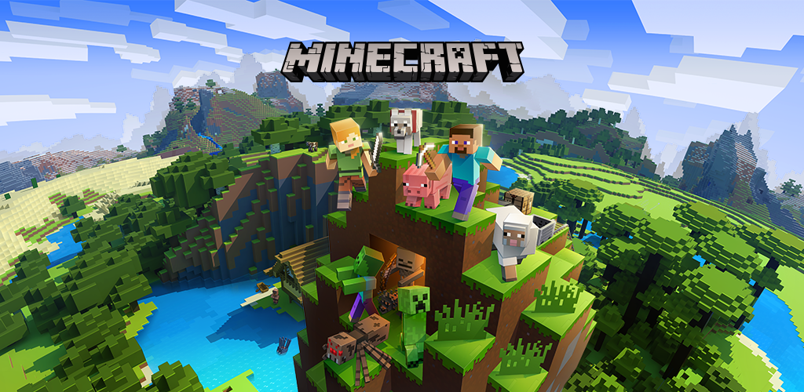
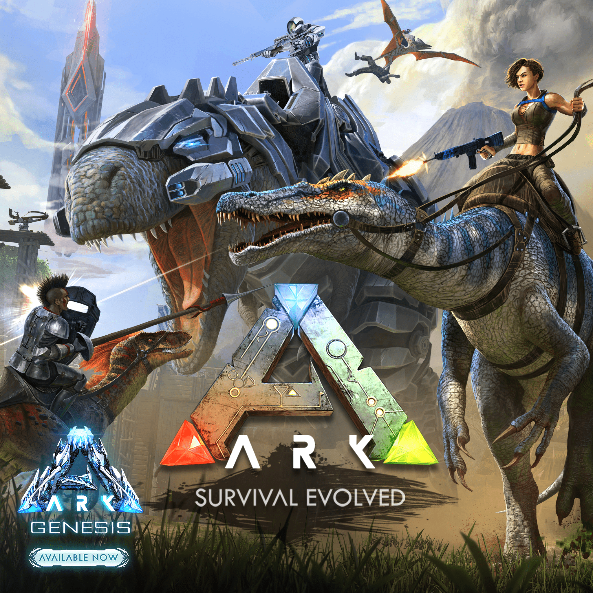

Minecraft
En Minecraft , los jugadores exploran un mundo 3D en bloques, generado por procedimientos con terreno infinito, y pueden descubrir y extraer materias primas, crear herramientas y elementos, y construir estructuras o movimientos de tierra . Dependiendo del modo de juego , los jugadores pueden luchar contra " turbas " controladas por computadora , así como cooperar o competir contra otros jugadores en el mismo mundo. Los modos de juego incluyen un modo de supervivencia , en el que los jugadores deben adquirir recursos para construir el mundo y mantener la salud, y un modo creativo, donde los jugadores tienen recursos ilimitados. Los jugadores pueden modificar el juego para crear nuevas mecánicas de juego, elementos y activos.

Rust
El objetivo de Rust es sobrevivir en la naturaleza utilizando materiales recolectados o robados. Los jugadores deben manejar con éxito su hambre, sed y salud, o arriesgarse a morir. A pesar de la amenaza inminente de osos y lobos , la principal amenaza son otros jugadores debido a que el juego es únicamente multijugador. El combate se logra mediante armas de fuego y varias armas, como arcos . Además, los vehículos controlados por personajes que no son jugadores ocasionalmente deambularán, atacando a jugadores fuertemente armados. Estos se pueden derrotar con persistencia. Rust presenta artesanía, aunque inicialmente limitada hasta el descubrimiento de elementos específicos en el mundo abierto del juego.. Para mantenerse protegidos, los jugadores deben construir bases o unirse a clanes para mejorar sus posibilidades de supervivencia. Las incursiones son un aspecto importante de Rust y lo realizan con mayor frecuencia clanes grandes.

ARK: Survival Evolved
El juego se juega desde una perspectiva en tercera persona o en primera persona y se navega por su mundo abierto a pie o montando un animal prehistórico. Los jugadores pueden usar armas de fuego y armas improvisadas para defenderse de humanos y criaturas hostiles, con la capacidad de construir bases como defensa en el suelo y en algunas criaturas. El juego tiene opciones para un jugador y multijugador . El modo multijugador permite la opción de formar tribus de miembros en un servidor. El número máximo de compañeros de tribu varía de cada servidor. En este modo, todos los dinosaurios domesticados y las estructuras de los edificios suelen compartirse entre los miembros.
